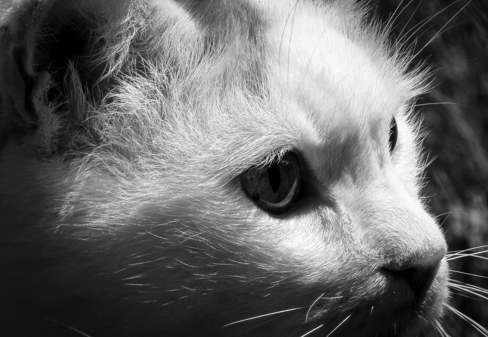

hello
关于大家

猫头圆、颜面部短。前肢五指，后肢四趾，趾端具锐利而弯曲的爪，爪能伸缩。趾行性。以伏击的方式猎捕其它动物，大多能攀缘上树。猫的趾底有脂肪质肉垫捕鼠时不会惊跑鼠，猫在休息和行走时爪缩进去，捕鼠时伸出来，以免在行走时发出声响，防止爪被磨钝。
猫的特征：
- 猫有230根骨头，比人类多24根。（这些骨头的用途是来摆奇怪的姿势--）
- 实际上猫的听觉比人和狗更灵敏。（妙鲜包终结者）
- 猫有及其敏感的神经系统。（猫都是蛇精病）
- 猫相对身体尺寸而言，有比任何哺乳动物都大的眼睛。（卖萌必备~）